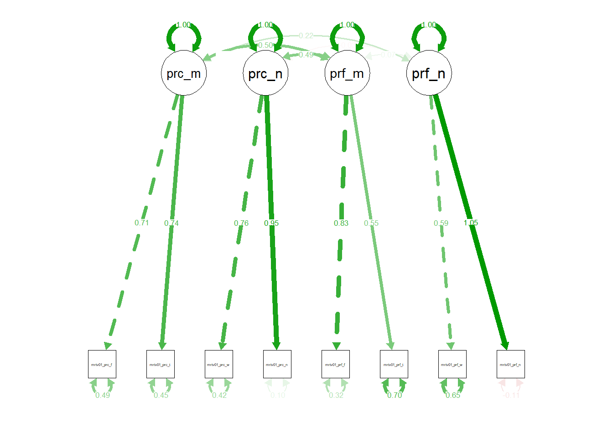
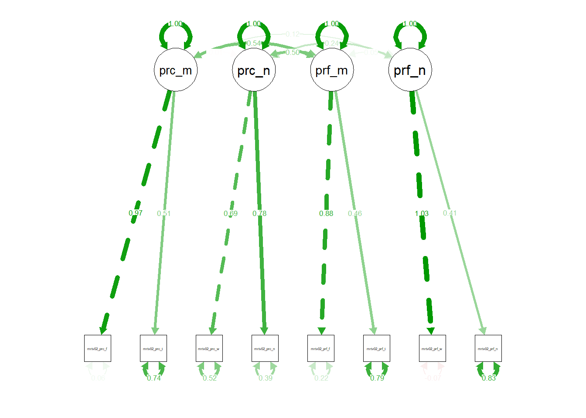
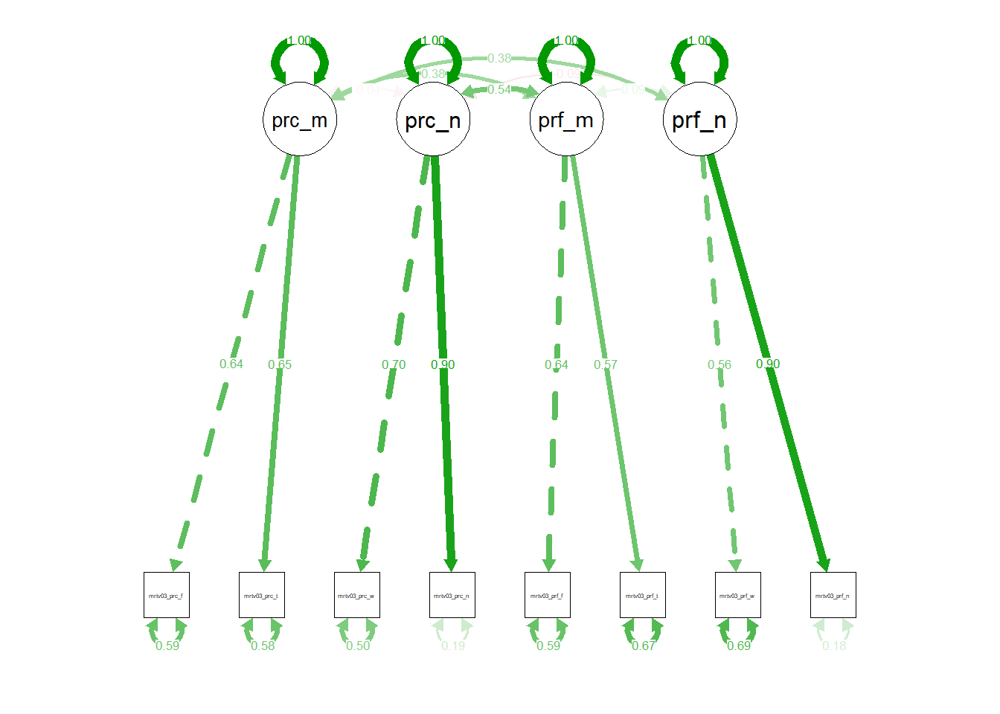
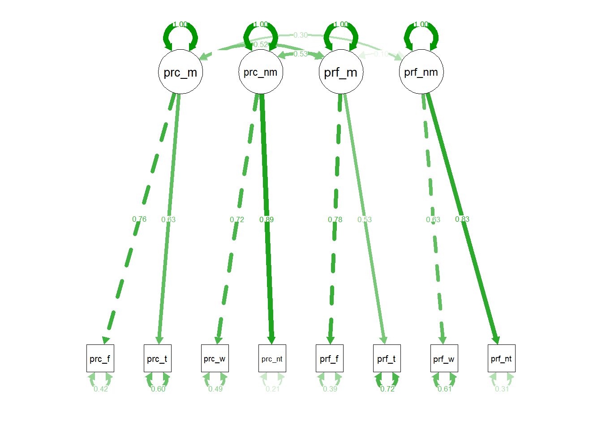

library(sjPlot)
library(dplyr)
library(lavaan)
data01 <- sjlabelled::read_spss(path = "data/dat1.sav",verbose = FALSE)
dat01 <- data01 %>% filter(Intro==1) %>% select(starts_with("meritv01")) %>% na.omit()
dat02 <- data01 %>% filter(Intro==1) %>% select(starts_with("meritv02")) %>% na.omit()
dat03 <- data01 %>% filter(Intro==1) %>% select(starts_with("meritv03_p")) %>% na.omit()model01 <- 'perc_merit=~meritv01_perc_effort+meritv01_perc_talent
perc_nmerit=~meritv01_perc_wpart+meritv01_perc_netw
pref_merit=~meritv01_pref_effort+meritv01_pref_talent
pref_nmerit=~meritv01_pref_wpart+meritv01_pref_netw'
fit1 <- cfa(model = model01,data = dat01)## Warning in lav_object_post_check(object): lavaan WARNING: some estimated ov
## variances are negativesummary(fit1,standardized=TRUE, fit.measures=TRUE)
semPlot::semPaths(object = fit1,what = "std")
## lavaan 0.6-4 ended normally after 49 iterations
##
## Optimization method NLMINB
## Number of free parameters 22
##
## Number of observations 399
##
## Estimator ML
## Model Fit Test Statistic 38.269
## Degrees of freedom 14
## P-value (Chi-square) 0.000
##
## Model test baseline model:
##
## Minimum Function Test Statistic 907.867
## Degrees of freedom 28
## P-value 0.000
##
## User model versus baseline model:
##
## Comparative Fit Index (CFI) 0.972
## Tucker-Lewis Index (TLI) 0.945
##
## Loglikelihood and Information Criteria:
##
## Loglikelihood user model (H0) -4615.722
## Loglikelihood unrestricted model (H1) -4596.587
##
## Number of free parameters 22
## Akaike (AIC) 9275.443
## Bayesian (BIC) 9363.200
## Sample-size adjusted Bayesian (BIC) 9293.393
##
## Root Mean Square Error of Approximation:
##
## RMSEA 0.066
## 90 Percent Confidence Interval 0.041 0.091
## P-value RMSEA <= 0.05 0.133
##
## Standardized Root Mean Square Residual:
##
## SRMR 0.042
##
## Parameter Estimates:
##
## Information Expected
## Information saturated (h1) model Structured
## Standard Errors Standard
##
## Latent Variables:
## Estimate Std.Err z-value P(>|z|) Std.lv Std.all
## perc_merit =~
## mrtv01_prc_ffr 1.000 0.960 0.715
## mrtv01_prc_tln 0.885 0.117 7.544 0.000 0.850 0.742
## perc_nmerit =~
## mrtv01_prc_wpr 1.000 0.995 0.764
## mrtv01_prc_ntw 1.115 0.113 9.881 0.000 1.109 0.950
## pref_merit =~
## mrtv01_prf_ffr 1.000 0.962 0.827
## mrtv01_prf_tln 0.645 0.086 7.474 0.000 0.620 0.546
## pref_nmerit =~
## mrtv01_prf_wpr 1.000 0.666 0.595
## mrtv01_prf_ntw 1.693 0.593 2.856 0.004 1.127 1.053
##
## Covariances:
## Estimate Std.Err z-value P(>|z|) Std.lv Std.all
## perc_merit ~~
## perc_nmerit -0.001 0.060 -0.024 0.981 -0.001 -0.001
## pref_merit 0.460 0.077 5.946 0.000 0.498 0.498
## pref_nmerit 0.142 0.065 2.183 0.029 0.223 0.223
## perc_nmerit ~~
## pref_merit 0.471 0.076 6.153 0.000 0.492 0.492
## pref_nmerit -0.021 0.034 -0.625 0.532 -0.032 -0.032
## pref_merit ~~
## pref_nmerit 0.044 0.039 1.127 0.260 0.069 0.069
##
## Variances:
## Estimate Std.Err z-value P(>|z|) Std.lv Std.all
## .mrtv01_prc_ffr 0.882 0.129 6.817 0.000 0.882 0.489
## .mrtv01_prc_tln 0.588 0.098 6.007 0.000 0.588 0.449
## .mrtv01_prc_wpr 0.704 0.103 6.812 0.000 0.704 0.416
## .mrtv01_prc_ntw 0.133 0.113 1.181 0.238 0.133 0.098
## .mrtv01_prf_ffr 0.429 0.112 3.829 0.000 0.429 0.317
## .mrtv01_prf_tln 0.904 0.078 11.573 0.000 0.904 0.702
## .mrtv01_prf_wpr 0.810 0.163 4.983 0.000 0.810 0.646
## .mrtv01_prf_ntw -0.124 0.436 -0.285 0.776 -0.124 -0.108
## perc_merit 0.922 0.159 5.804 0.000 1.000 1.000
## perc_nmerit 0.990 0.142 6.980 0.000 1.000 1.000
## pref_merit 0.925 0.141 6.560 0.000 1.000 1.000
## pref_nmerit 0.443 0.166 2.661 0.008 1.000 1.000model02 <- 'perc_merit=~meritv02_perc_effort+meritv02_perc_talent
perc_nmerit=~meritv02_perc_wpart+meritv02_perc_netw
pref_merit=~meritv02_pref_effort+meritv02_pref_talent
pref_nmerit=~meritv02_pref_wpart+meritv02_pref_netw'
fit2 <- cfa(model = model02,data = dat02)## Warning in lav_object_post_check(object): lavaan WARNING: some estimated ov
## variances are negativesummary(fit2,standardized=TRUE, fit.measures=TRUE)
semPlot::semPaths(object = fit2,what = "std")
## lavaan 0.6-4 ended normally after 52 iterations
##
## Optimization method NLMINB
## Number of free parameters 22
##
## Number of observations 398
##
## Estimator ML
## Model Fit Test Statistic 61.702
## Degrees of freedom 14
## P-value (Chi-square) 0.000
##
## Model test baseline model:
##
## Minimum Function Test Statistic 664.288
## Degrees of freedom 28
## P-value 0.000
##
## User model versus baseline model:
##
## Comparative Fit Index (CFI) 0.925
## Tucker-Lewis Index (TLI) 0.850
##
## Loglikelihood and Information Criteria:
##
## Loglikelihood user model (H0) -4805.321
## Loglikelihood unrestricted model (H1) -4774.470
##
## Number of free parameters 22
## Akaike (AIC) 9654.642
## Bayesian (BIC) 9742.344
## Sample-size adjusted Bayesian (BIC) 9672.537
##
## Root Mean Square Error of Approximation:
##
## RMSEA 0.093
## 90 Percent Confidence Interval 0.070 0.117
## P-value RMSEA <= 0.05 0.002
##
## Standardized Root Mean Square Residual:
##
## SRMR 0.055
##
## Parameter Estimates:
##
## Information Expected
## Information saturated (h1) model Structured
## Standard Errors Standard
##
## Latent Variables:
## Estimate Std.Err z-value P(>|z|) Std.lv Std.all
## perc_merit =~
## mrtv02_prc_ffr 1.000 1.390 0.969
## mrtv02_prc_tln 0.417 0.066 6.307 0.000 0.580 0.513
## perc_nmerit =~
## mrtv02_prc_wpr 1.000 0.916 0.692
## mrtv02_prc_ntw 0.998 0.117 8.515 0.000 0.914 0.780
## pref_merit =~
## mrtv02_prf_ffr 1.000 1.145 0.882
## mrtv02_prf_tln 0.427 0.064 6.719 0.000 0.489 0.459
## pref_nmerit =~
## mrtv02_prf_wpr 1.000 1.208 1.034
## mrtv02_prf_ntw 0.366 0.160 2.294 0.022 0.443 0.412
##
## Covariances:
## Estimate Std.Err z-value P(>|z|) Std.lv Std.all
## perc_merit ~~
## perc_nmerit -0.013 0.078 -0.171 0.864 -0.010 -0.010
## pref_merit 0.853 0.102 8.330 0.000 0.536 0.536
## pref_nmerit 0.196 0.084 2.321 0.020 0.117 0.117
## perc_nmerit ~~
## pref_merit 0.520 0.084 6.173 0.000 0.496 0.496
## pref_nmerit 0.264 0.068 3.895 0.000 0.239 0.239
## pref_merit ~~
## pref_nmerit 0.074 0.076 0.975 0.330 0.053 0.053
##
## Variances:
## Estimate Std.Err z-value P(>|z|) Std.lv Std.all
## .mrtv02_prc_ffr 0.124 0.262 0.475 0.635 0.124 0.060
## .mrtv02_prc_tln 0.944 0.081 11.658 0.000 0.944 0.737
## .mrtv02_prc_wpr 0.916 0.110 8.325 0.000 0.916 0.522
## .mrtv02_prc_ntw 0.539 0.096 5.594 0.000 0.539 0.392
## .mrtv02_prf_ffr 0.376 0.161 2.330 0.020 0.376 0.223
## .mrtv02_prf_tln 0.899 0.070 12.838 0.000 0.899 0.790
## .mrtv02_prf_wpr -0.094 0.614 -0.153 0.879 -0.094 -0.069
## .mrtv02_prf_ntw 0.960 0.107 8.981 0.000 0.960 0.831
## perc_merit 1.932 0.300 6.448 0.000 1.000 1.000
## perc_nmerit 0.839 0.138 6.065 0.000 1.000 1.000
## pref_merit 1.312 0.197 6.652 0.000 1.000 1.000
## pref_nmerit 1.460 0.622 2.347 0.019 1.000 1.000model03 <- 'perc_merit=~meritv03_perc_effort+meritv03_perc_talent
perc_nmerit=~meritv03_perc_wpart+meritv03_perc_netw
pref_merit=~meritv03_pref_effort+meritv03_pref_talent
pref_nmerit=~meritv03_pref_wpart+meritv03_pref_netw'
fit3 <- cfa(model = model03,data = dat03)
summary(fit3,standardized=TRUE, fit.measures=TRUE)
semPlot::semPaths(object = fit3,what = "std")
## lavaan 0.6-4 ended normally after 50 iterations
##
## Optimization method NLMINB
## Number of free parameters 22
##
## Number of observations 399
##
## Estimator ML
## Model Fit Test Statistic 46.971
## Degrees of freedom 14
## P-value (Chi-square) 0.000
##
## Model test baseline model:
##
## Minimum Function Test Statistic 611.588
## Degrees of freedom 28
## P-value 0.000
##
## User model versus baseline model:
##
## Comparative Fit Index (CFI) 0.944
## Tucker-Lewis Index (TLI) 0.887
##
## Loglikelihood and Information Criteria:
##
## Loglikelihood user model (H0) -4955.821
## Loglikelihood unrestricted model (H1) -4932.335
##
## Number of free parameters 22
## Akaike (AIC) 9955.642
## Bayesian (BIC) 10043.400
## Sample-size adjusted Bayesian (BIC) 9973.592
##
## Root Mean Square Error of Approximation:
##
## RMSEA 0.077
## 90 Percent Confidence Interval 0.053 0.102
## P-value RMSEA <= 0.05 0.032
##
## Standardized Root Mean Square Residual:
##
## SRMR 0.043
##
## Parameter Estimates:
##
## Information Expected
## Information saturated (h1) model Structured
## Standard Errors Standard
##
## Latent Variables:
## Estimate Std.Err z-value P(>|z|) Std.lv Std.all
## perc_merit =~
## mrtv03_prc_ffr 1.000 0.882 0.640
## mrtv03_prc_tln 0.919 0.174 5.292 0.000 0.811 0.646
## perc_nmerit =~
## mrtv03_prc_wpr 1.000 0.951 0.704
## mrtv03_prc_ntw 1.149 0.153 7.515 0.000 1.092 0.899
## pref_merit =~
## mrtv03_prf_ffr 1.000 0.733 0.638
## mrtv03_prf_tln 0.961 0.155 6.189 0.000 0.704 0.571
## pref_nmerit =~
## mrtv03_prf_wpr 1.000 0.692 0.558
## mrtv03_prf_ntw 1.549 0.398 3.888 0.000 1.071 0.904
##
## Covariances:
## Estimate Std.Err z-value P(>|z|) Std.lv Std.all
## perc_merit ~~
## perc_nmerit -0.034 0.060 -0.568 0.570 -0.041 -0.041
## pref_merit 0.243 0.065 3.720 0.000 0.376 0.376
## pref_nmerit 0.233 0.074 3.138 0.002 0.382 0.382
## perc_nmerit ~~
## pref_merit 0.376 0.073 5.159 0.000 0.540 0.540
## pref_nmerit -0.060 0.042 -1.409 0.159 -0.091 -0.091
## pref_merit ~~
## pref_nmerit 0.047 0.040 1.177 0.239 0.092 0.092
##
## Variances:
## Estimate Std.Err z-value P(>|z|) Std.lv Std.all
## .mrtv03_prc_ffr 1.122 0.163 6.863 0.000 1.122 0.590
## .mrtv03_prc_tln 0.919 0.137 6.712 0.000 0.919 0.583
## .mrtv03_prc_wpr 0.921 0.129 7.137 0.000 0.921 0.505
## .mrtv03_prc_ntw 0.284 0.148 1.914 0.056 0.284 0.192
## .mrtv03_prf_ffr 0.781 0.101 7.729 0.000 0.781 0.593
## .mrtv03_prf_tln 1.024 0.107 9.612 0.000 1.024 0.674
## .mrtv03_prf_wpr 1.058 0.140 7.550 0.000 1.058 0.689
## .mrtv03_prf_ntw 0.258 0.285 0.905 0.365 0.258 0.183
## perc_merit 0.779 0.179 4.340 0.000 1.000 1.000
## perc_nmerit 0.904 0.158 5.736 0.000 1.000 1.000
## pref_merit 0.537 0.113 4.745 0.000 1.000 1.000
## pref_nmerit 0.478 0.142 3.362 0.001 1.000 1.000dat04 <- data01 %>% filter(Intro==1) %>% select(starts_with("meritv01"),starts_with("meritv02"),starts_with("meritv03_p"))
dat04$perc_effort <- rowSums(dat04[,c(matches(match = "perc_effort",vars = names(dat04)))],na.rm = TRUE)
dat04$perc_talent <- rowSums(dat04[,c(matches(match = "perc_talent",vars = names(dat04)))],na.rm = TRUE)
dat04$perc_wpart <- rowSums(dat04[,c(matches(match = "perc_wpart" ,vars = names(dat04)))],na.rm = TRUE)
dat04$perc_netw <- rowSums(dat04[,c(matches(match = "perc_netw" ,vars = names(dat04)))],na.rm = TRUE)
dat04$pref_effort <- rowSums(dat04[,c(matches(match = "pref_effort",vars = names(dat04)))],na.rm = TRUE)
dat04$pref_talent <- rowSums(dat04[,c(matches(match = "pref_talent",vars = names(dat04)))],na.rm = TRUE)
dat04$pref_wpart <- rowSums(dat04[,c(matches(match = "pref_wpart" ,vars = names(dat04)))],na.rm = TRUE)
dat04$pref_netw <- rowSums(dat04[,c(matches(match = "pref_netw" ,vars = names(dat04)))],na.rm = TRUE)
model04 <- 'perc_merit=~perc_effort+perc_talent
perc_nmerit=~perc_wpart+perc_netw
pref_merit=~pref_effort+pref_talent
pref_nmerit=~pref_wpart+pref_netw'
fit4 <- cfa(model = model04,data = dat04)
summary(fit4,standardized=TRUE, fit.measures=TRUE)
semPlot::semPaths(object = fit4,what = "std")
## lavaan 0.6-4 ended normally after 46 iterations
##
## Optimization method NLMINB
## Number of free parameters 22
##
## Number of observations 1198
##
## Estimator ML
## Model Fit Test Statistic 147.578
## Degrees of freedom 14
## P-value (Chi-square) 0.000
##
## Model test baseline model:
##
## Minimum Function Test Statistic 2127.884
## Degrees of freedom 28
## P-value 0.000
##
## User model versus baseline model:
##
## Comparative Fit Index (CFI) 0.936
## Tucker-Lewis Index (TLI) 0.873
##
## Loglikelihood and Information Criteria:
##
## Loglikelihood user model (H0) -14520.700
## Loglikelihood unrestricted model (H1) -14446.911
##
## Number of free parameters 22
## Akaike (AIC) 29085.400
## Bayesian (BIC) 29197.345
## Sample-size adjusted Bayesian (BIC) 29127.464
##
## Root Mean Square Error of Approximation:
##
## RMSEA 0.089
## 90 Percent Confidence Interval 0.077 0.103
## P-value RMSEA <= 0.05 0.000
##
## Standardized Root Mean Square Residual:
##
## SRMR 0.044
##
## Parameter Estimates:
##
## Information Expected
## Information saturated (h1) model Structured
## Standard Errors Standard
##
## Latent Variables:
## Estimate Std.Err z-value P(>|z|) Std.lv Std.all
## perc_merit =~
## perc_effort 1.000 1.059 0.760
## perc_talent 0.707 0.060 11.865 0.000 0.749 0.632
## perc_nmerit =~
## perc_wpart 1.000 0.955 0.716
## perc_netw 1.112 0.077 14.465 0.000 1.062 0.887
## pref_merit =~
## pref_effort 1.000 0.952 0.779
## pref_talent 0.648 0.052 12.518 0.000 0.616 0.533
## pref_nmerit =~
## pref_wpart 1.000 0.742 0.626
## pref_netw 1.253 0.204 6.139 0.000 0.930 0.833
##
## Covariances:
## Estimate Std.Err z-value P(>|z|) Std.lv Std.all
## perc_merit ~~
## perc_nmerit -0.001 0.039 -0.014 0.989 -0.001 -0.001
## pref_merit 0.521 0.049 10.590 0.000 0.517 0.517
## pref_nmerit 0.239 0.045 5.292 0.000 0.304 0.304
## perc_nmerit ~~
## pref_merit 0.484 0.047 10.321 0.000 0.533 0.533
## pref_nmerit 0.012 0.026 0.473 0.637 0.017 0.017
## pref_merit ~~
## pref_nmerit 0.068 0.030 2.228 0.026 0.096 0.096
##
## Variances:
## Estimate Std.Err z-value P(>|z|) Std.lv Std.all
## .perc_effort 0.819 0.094 8.693 0.000 0.819 0.422
## .perc_talent 0.846 0.056 15.111 0.000 0.846 0.601
## .perc_wpart 0.865 0.068 12.812 0.000 0.865 0.487
## .perc_netw 0.306 0.072 4.232 0.000 0.306 0.213
## .pref_effort 0.586 0.069 8.496 0.000 0.586 0.393
## .pref_talent 0.956 0.048 20.102 0.000 0.956 0.716
## .pref_wpart 0.854 0.095 9.026 0.000 0.854 0.608
## .pref_netw 0.383 0.139 2.758 0.006 0.383 0.307
## perc_merit 1.122 0.114 9.873 0.000 1.000 1.000
## perc_nmerit 0.913 0.086 10.653 0.000 1.000 1.000
## pref_merit 0.906 0.086 10.583 0.000 1.000 1.000
## pref_nmerit 0.551 0.099 5.565 0.000 1.000 1.000